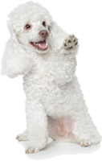

Krul en langhaar
Poedel, Bichon Frisé, Shih Tzu, LabradoodleMeer infoUw hond heeft van nature een doorgroeiende vacht. Deze vacht vraagt om intensief borstelonderhoud. Omdat de vacht door blijft groeien, wordt hij iedere 10 tot 12 weken geknipt.
Wat ik voor uw hond doe
Ik begin met het inkorten van de vacht. De vacht wordt helemaal uitgeborsteld en eventuele klitjes worden verwijderd. Daarna wordt uw hond gewassen met een voedende shampoo en indien nodig behandeld met een crèmespoeling, en gedroogd. De nagels worden geknipt en de oren schoongemaakt. Tot slot wordt uw hond helemaal uitgekamd en nagewerkt volgens uw wensen.